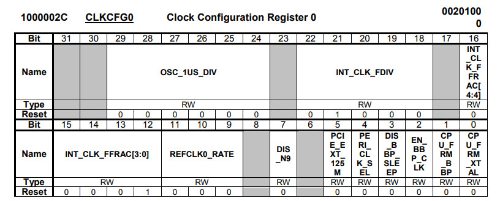
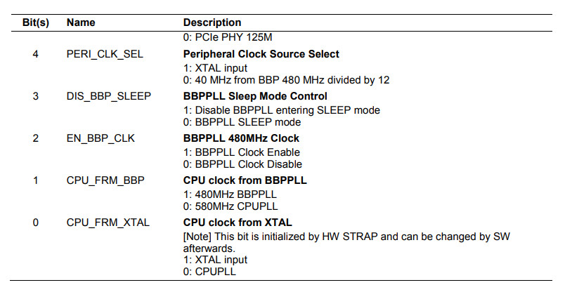
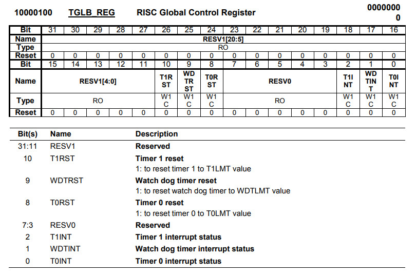
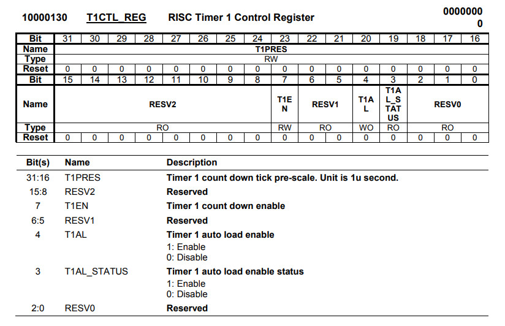
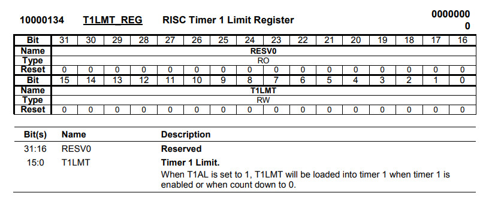
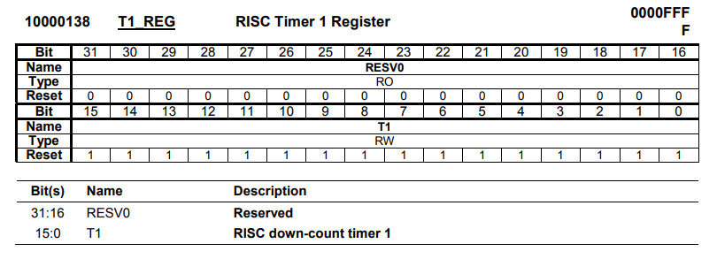

完成


PERI_CLK_SEL用來設定需要使用的Clock Source






.extern _start
.set noreorder
.equiv CLKCFG0, 0xb000002c
.equiv TGLB_REG, 0xb0000100
.equiv T1CTL_REG, 0xb0000130
.equiv T1LMT_REG, 0xb0000134
.equiv GPIO_CTRL_1, 0xb0000604
.equiv GPIO_DATA_1, 0xb0000624
.equiv LED, (44 - 32)
.text
_start:
b reset
.org 0x400
reset:
li $8, GPIO_CTRL_1
li $9, (1 << LED)
sw $9, 0($8)
li $8, CLKCFG0
lw $9, 0($8)
or $9, (1 << 4) | (1 << 3) | (1 << 2)
sw $9, 0($8)
li $8, T1LMT_REG
li $9, 1000
sw $9, 0($8)
li $8, T1CTL_REG
li $9, (1000 << 16) | (1 << 7) | (1 << 4)
sw $9, 0($8)
loop:
li $8, TGLB_REG
lw $9, 0($8)
and $9, 4
beqz $9, loop
nop
li $8, GPIO_DATA_1
xor $10, (1 << LED)
sw $10, 0($8)
li $8, TGLB_REG
li $9, 4
sw $9, 0($8)
b loop
nop
P.S. T1PRES = 1000，代表每筆下數的時間為1ms，T1LMT_REG = 1000，代表每秒產生一次中斷，需要注意的是，不管Timer1使用XTAL或者BBPPLL當作Clock Source，BBPPLL都必須要Enable
完成